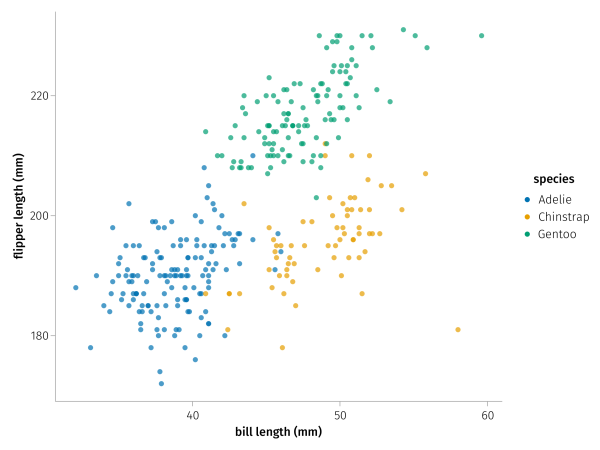
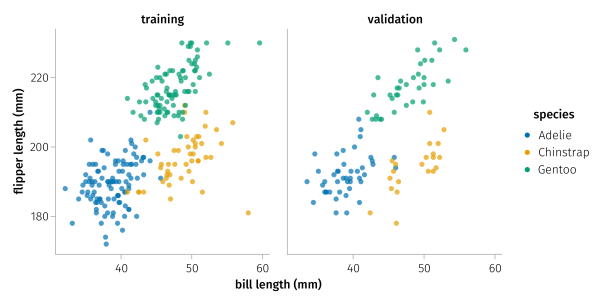
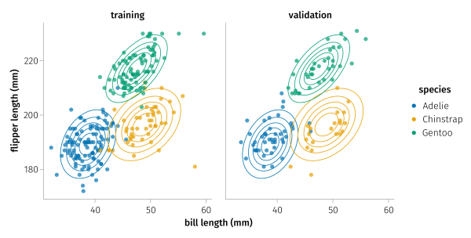
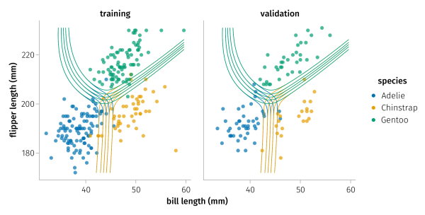

Classification of penguin species

You are seeing the HTML output generated by Documenter.jl and Literate.jl from the Julia source file. The corresponding notebook can be viewed in nbviewer.
Packages
using AlgebraOfGraphics
using CairoMakie
using CalibrationErrors
using DataFrames
using Distributions
using MLJ
using MLJNaiveBayesInterface
using PalmerPenguins
using Random
# Plotting settings
set_aog_theme!()
CairoMakie.activate!(; type="svg")Data
In this example we study the calibration of different models that classify three penguin species based on measurements of their bill and flipper lengths.
We use the Palmer penguins dataset to to train and validate the models.
penguins = dropmissing(DataFrame(PalmerPenguins.load()))
penguins_mapping =
data(penguins) * mapping(
:bill_length_mm => "bill length (mm)", :flipper_length_mm => "flipper length (mm)"
)
draw(penguins_mapping * mapping(; color=:species) * visual(; alpha=0.7))
We split the data randomly into a training and validation dataset. The training dataset contains around 60% of the samples.
Random.seed!(1234)
n = nrow(penguins)
k = floor(Int, 0.7 * n)
Random.seed!(100)
penguins.train = shuffle!(vcat(trues(k), falses(n - k)))
# Plot the training and validation data
dataset = :train => renamer(true => "training", false => "validation") => "Dataset"
plt = penguins_mapping * mapping(; color=:species, col=dataset) * visual(; alpha=0.7)
draw(plt; axis=(height=300,))
Fitting normal distributions
For each species, we fit independent normal distributions to the observations of the bill and flipper length in the training data, using maximum likelihood estimation.
y, X = unpack(
penguins,
==(:species),
x -> x === :bill_length_mm || x === :flipper_length_mm;
:species => Multiclass,
:bill_length_mm => MLJ.Continuous,
:flipper_length_mm => MLJ.Continuous,
)
model = fit!(machine(GaussianNBClassifier(), X, y); rows=penguins.train);
nothing #hide[ Info: Training Machine{GaussianNBClassifier,…}.
We plot the estimated normal distributions.
# plot datasets
fg = draw(plt; axis=(height=300,))
# plot Gaussian distributions
xgrid = range(extrema(penguins.bill_length_mm)...; length=100)
ygrid = range(extrema(penguins.flipper_length_mm)...; length=100)
let f = (x, y, dist) -> pdf(dist, [x, y])
for (class, color) in zip(classes(y), Makie.wong_colors())
pdfs = f.(xgrid, ygrid', Ref(model.fitresult.gaussians[class]))
contour!(fg.figure[1, 1], xgrid, ygrid, pdfs; color=color)
contour!(fg.figure[1, 2], xgrid, ygrid, pdfs; color=color)
end
end
fg
Naive Bayes classifier
Let us assume that the bill and flipper length are conditionally independent given the penguin species. Then Bayes' theorem implies that
\[\begin{aligned} \mathbb{P}(\mathrm{species} \,|\, \mathrm{bill}, \mathrm{flipper}) &= \frac{\mathbb{P}(\mathrm{species}) \mathbb{P}(\mathrm{bill}, \mathrm{flipper} \,|\, \mathrm{species})}{\mathbb{P}(\mathrm{bill}, \mathrm{flipper})} \\ &= \frac{\mathbb{P}(\mathrm{species}) \mathbb{P}(\mathrm{bill} \,|\, \mathrm{species}) \mathbb{P}(\mathrm{flipper} \,|\, \mathrm{species})}{\mathbb{P}(\mathrm{bill}, \mathrm{flipper})}. \end{aligned}\]
This predictive model is known as naive Bayes classifier.
In the section above, we estimated $\mathbb{P}(\mathrm{species})$, $\mathbb{P}(\mathrm{bill} \,|\, \mathrm{species})$, and $\mathbb{P}(\mathrm{flipper} \,|\, \mathrm{species})$ for each penguin species from the training data. For the conditional distributions we used a Gaussian approximation.
predictions = MLJ.predict(model)
train_predict = predictions[penguins.train]
val_predict = predictions[.!penguins.train]
# Plot datasets
fg = draw(plt; axis=(height=300,))
# Plot predictions
predictions_grid = reshape(
MLJ.predict(model, reduce(hcat, vcat.(xgrid, ygrid'))'), length(xgrid), length(ygrid)
)
for (class, color) in zip(classes(y), Makie.wong_colors())
p = pdf.(predictions_grid, class)
contour!(fg.figure[1, 1], xgrid, ygrid, p; color=color)
contour!(fg.figure[1, 2], xgrid, ygrid, p; color=color)
end
fg
Evaluation
We evaluate the probabilistic predictions of the naive Bayes classifier that we just trained.
Log-likelihood
We compute the average log-likelihood of the validation data. It is equivalent to the negative cross-entropy.
val_y = y[.!penguins.train]
-mean(cross_entropy(val_predict, val_y))-0.12188703745583586Brier score
The average log-likelihood is also equivalent to the logarithmic score. The Brier score is another strictly proper scoring rule that can be used for evaluating probabilistic predictions.
mean(brier_score(val_predict, val_y))-0.07385286949971775Expected calibration error
As all proper scoring rules, the logarithmic and the Brier score can be decomposed in three terms that quantify the sharpness and calibration of the predictive model and the irreducible uncertainty of the targets that is inherent to the prediction problem. The calibration term in this decomposition is the expected calibration error (ECE)
\[\mathbb{E} d\big(P_X, \mathrm{law}(Y \,|\, P_X)\big)\]
with respect to the score divergence $d$.
Scoring rules, however, include also the sharpness and the uncertainty term. Thus models can trade off calibration for sharpness and therefore scoring rules are not suitable for specifically evaluating calibration of predictive models.
The score divergence to the logarithmic and the Brier score are the Kullback-Leibler (KL) divergence
\[d\big(P_X, \mathrm{law}(Y \,|\, P_X)\big) = \sum_{y} \mathbb{P}(Y = y \,|\, P_X) \log\big(\mathbb{P}(Y = y \,|\, P_X) / P_X(\{y\})\big)\]
and the squared Euclidean distance
\[d\big(P_X, \mathrm{law}(Y \,|\, P_X)\big) = \sum_{y} \big(P_X - \mathrm{law}(Y \,|\, P_X)\big)^2(\{y\}),\]
respectively. The KL divergence is defined only if $\mathrm{law}(Y \,|\, P_X)$ is absolutely continuous with respect to $P_X$, i.e., if $P_X(\{y\}) = 0$ implies $\mathbb{P}(Y = y \,|\, P_X) = 0$.
We estimate the ECE by binning the probability simplex of predictions $P_X$ and computing the weighted average of the distances between the mean prediction and the distribution of targets in each bin.
One approach is to use bins of uniform size.
ece = ECE(UniformBinning(10), (μ, y) -> kl_divergence(y, μ));
nothing #hideWe have to work with a numerical encoding of the true penguin species and a corresponding vector of predictions. We use RowVecs to indicate that the rows in the matrix of probabilities returned by pdf are the predictions. If we would provide predictions as columns of a matrix, we would have to use ColVecs.
val_yint = map(MLJ.levelcode, val_y)
val_probs = RowVecs(pdf(val_predict, MLJ.classes(y)));
nothing #hideWe compute the estimate on the validation data:
ece(val_probs, val_yint)0.04860861700674836For the squared Euclidean distance we obtain:
ece = ECE(UniformBinning(10), SqEuclidean())
ece(val_probs, val_yint)0.02426469201343113Alternatively, one can use a data-dependent binning scheme that tries to split the predictions in a way that minimizes the variance in each bin.
With the KL divergence we get:
ece = ECE(MedianVarianceBinning(5), (μ, y) -> kl_divergence(y, μ))
ece(val_probs, val_yint)0.027874966150111966For the squared Euclidean distance we obtain:
ece = ECE(MedianVarianceBinning(5), SqEuclidean())
ece(val_probs, val_yint)0.012238423729555838We see that the estimates (of the same theoretical quantity!) are highly dependent on the chosen binning scheme.
Kernel calibration error
As an alternative to the ECE, we estimate the kernel calibration error (KCE). We keep it simple here, and use the tensor product kernel
\[k\big((\mu, y), (\mu', y')\big) = \delta_{y,y'} \exp{\bigg(-\frac{{\|\mu - \mu'\|}_2^2}{2\nu^2} \bigg)}\]
with length scale $\nu > 0$ for predictions $\mu,\mu'$ and corresponding targets $y, y'$. For simplicity, we estimate length scale $\nu$ with the median heuristic.
distances = pairwise(SqEuclidean(), RowVecs(pdf(train_predict, MLJ.classes(y))))
ν = sqrt(median(distances[i] for i in CartesianIndices(distances) if i[1] < i[2]))
kernel = with_lengthscale(GaussianKernel(), ν) ⊗ WhiteKernel();
nothing #hideWe obtain the following biased estimate of the squared KCE (SKCE):
skce = SKCE(kernel; unbiased=false)
skce(val_probs, val_yint)0.0007888007181424232Similar to the biased estimates of the ECE, the biased estimates of the SKCE are always non-negative. The unbiased estimates can be negative as well, in particular if the model is (close to being) calibrated:
skce = SKCE(kernel)
skce(val_probs, val_yint)5.077982135882213e-5When the datasets are large, the quadratic sample complexity of the standard biased and unbiased estimators of the SKCE can become prohibitive. In these cases, one can resort to an estimator that averages estimates of non-overlapping blocks of samples. This estimator allows to trade off computational cost for increased variance.
Here we consider the extreme case of blocks with two samples, which yields an estimator with linear sample complexity:
skce = SKCE(kernel; blocksize=2)
skce(val_probs, val_yint)0.019033063524410525Package and system information
Package version
Status `~/work/CalibrationErrors.jl/CalibrationErrors.jl/examples/classification/Project.toml`
[cbdf2221] AlgebraOfGraphics v0.6.4
[13f3f980] CairoMakie v0.7.2
[33913031] CalibrationErrors v0.6.1
[a93c6f00] DataFrames v1.3.2
[31c24e10] Distributions v0.25.48
[add582a8] MLJ v0.17.1
[33e4bacb] MLJNaiveBayesInterface v0.1.5
[8b842266] PalmerPenguins v0.1.3Computer information
Julia Version 1.7.2
Commit bf53498635 (2022-02-06 15:21 UTC)
Platform Info:
OS: Linux (x86_64-pc-linux-gnu)
CPU: Intel(R) Xeon(R) Platinum 8272CL CPU @ 2.60GHz
WORD_SIZE: 64
LIBM: libopenlibm
LLVM: libLLVM-12.0.1 (ORCJIT, skylake-avx512)
Environment:
JULIA_DEBUG = DocumenterManifest
To reproduce the project environment of this example you can download the full Manifest.toml.
This page was generated using Literate.jl.